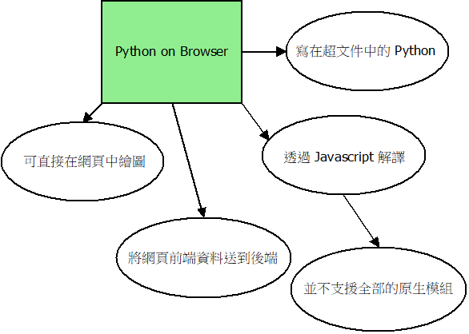
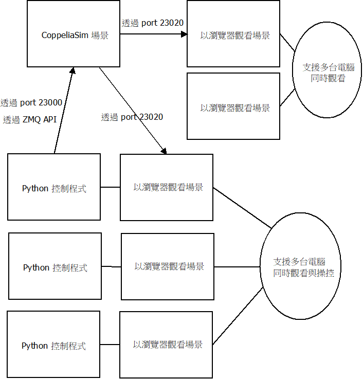
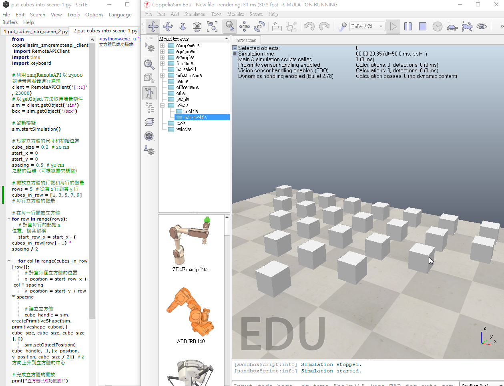
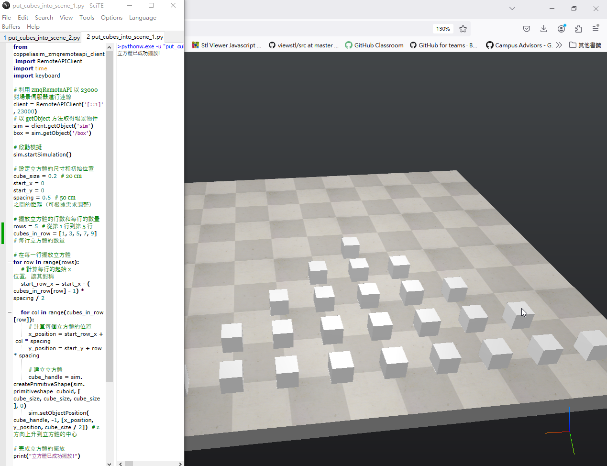

Windows <<
Previous Next >> String
Environment
說明如何利用 ShareX 與 Zoomit 拍攝電腦操作流程影片:
示範如何加入 Brython 頁面, 並用來編寫 print 與 for 迴圈相關程式:
說明如何使用可攜程式維護作業網站:
check_1a_w7_html
check_1b_w7_html
利用以下影片了解 Git:
執行 Python 的環境:
- Brython 環境: https://mde.tw/cp2024/content/Brython.html
- 可攜環境的 SciTE 編輯器
- 可攜環境的命令提示字元視窗
- Jupyter lab
- Codespaces 環境中的 Visual Studio Code
Brython 頁面超文件: brython_html.txt

brython_functions.dia
Strings, input(), and print()
首先必須瞭解 Python 變數命名法則:
必須以英文字母或 _ 作為開頭, 隨後可以接上任何數字、英文字母或 _
但變數名稱區分英文字母的大小寫, 變數也可以使用中文命名, 但一般並不建議使用英文以外的多 byte 語系命名.
String 為字串, 可以用單引號、雙引號或三引號隔開. 例如:
"this is a string's " 使用雙引號將字串區隔
'this is a string' 使用單引號將字串區隔
當字串超過一行時, 可以使用三引號:
'''
這裡面是用來說明程式目的或紀錄
相關事項的多行文字
'''
print 與 for 重複迴圈
help(print)
Help on built-in function print in module builtins:
print(...)
print(value, ..., sep=' ', end='\n', file=sys.stdout, flush=False)
Prints the values to a stream, or to sys.stdout by default.
Optional keyword arguments:
file: a file-like object (stream); defaults to the current sys.stdout.
sep: string inserted between values, default a space.
end: string appended after the last value, default a newline.
flush: whether to forcibly flush the stream.
help(range)
Help on class range in module builtins:
class range(object)
| range(stop) -> range object
| range(start, stop[, step]) -> range object
|
| Return an object that produces a sequence of integers from start (inclusive)
| to stop (exclusive) by step. range(i, j) produces i, i+1, i+2, ..., j-1.
| start defaults to 0, and stop is omitted! range(4) produces 0, 1, 2, 3.
| These are exactly the valid indices for a list of 4 elements.
| When step is given, it specifies the increment (or decrement).
|
| Methods defined here:
|
| __bool__(self, /)
| True if self else False
|
| __contains__(self, key, /)
| Return key in self.
|
| __eq__(self, value, /)
| Return self==value.
|
| __ge__(self, value, /)
| Return self>=value.
|
| __getattribute__(self, name, /)
| Return getattr(self, name).
|
| __getitem__(self, key, /)
| Return self[key].
|
| __gt__(self, value, /)
| Return self>value.
|
| __hash__(self, /)
| Return hash(self).
|
| __iter__(self, /)
| Implement iter(self).
|
| __le__(self, value, /)
| Return self<=value.
|
| __len__(self, /)
| Return len(self).
|
| __lt__(self, value, /)
| Return self<value.
|
| __ne__(self, value, /)
| Return self!=value.
|
| __reduce__(...)
| Helper for pickle.
|
| __repr__(self, /)
| Return repr(self).
|
| __reversed__(...)
| Return a reverse iterator.
|
| count(...)
| rangeobject.count(value) -> integer -- return number of occurrences of value
|
| index(...)
| rangeobject.index(value) -> integer -- return index of value.
| Raise ValueError if the value is not present.
|
| ----------------------------------------------------------------------
| Static methods defined here:
|
| __new__(*args, **kwargs) from builtins.type
| Create and return a new object. See help(type) for accurate signature.
|
| ----------------------------------------------------------------------
| Data descriptors defined here:
|
| start
|
| step
|
| stop
與 ChatGPT 對話:
可以解釋一下help(range) 傳回來的內容嗎?
將 help(range) 傳回的內容貼給 ChatGPT, 然後問:
可以舉例詳細說明以下 help(range) 傳回來的內容嗎? 然後貼上 help 傳回的資料.
詢問 for i in range():
如何解釋 Python 中的 for i in range(5):
如何解釋 range(5) ?
range(5) 是數列嗎?
能夠生成從 0 到 4 的整數序列, 所以可以稱 range(5) 為甚麼?
請舉 10 個可以協助使用者理解 for range 與 print 等關鍵字的範例
請用 Python 的 for 跟 print 印出五行的 * 排列成的三角形金字塔, 也就是 * 在最中間, 第二行為正中央的 *** 然後第三行 *****, 總共五行.
請詳細解釋你的解法過程
問題分析
我們希望生成一個由星號 * 組成的金字塔，總共 5 行，並且使星號在每一行中間對齊。金字塔的形狀如下：
*
***
*****
*******
*********
解法步驟
設定行數： 我們首先定義金字塔的行數。這裡我們設置 n = 5，代表金字塔有 5 行。
使用 for 迴圈： 我們將使用 for 迴圈來迭代每一行。range(n) 會生成從 0 到 4 的整數，對應於每一行的索引。
計算空格數： 為了使星號在每一行中間對齊，我們需要在星號前面印出一些空格。
在第 i 行，前面需要印出 n - i - 1 個空格。這樣可以確保每一行的星號都在金字塔的中間位置。
例如，在第 0 行（第一行）需要 4 個空格，在第 1 行需要 3 個空格，以此類推。
計算星號數： 每一行的星號數量是 2 * i + 1。
在第 0 行有 1 個星號，第一行有 3 個星號，第二行有 5 個星號，依此類推，這樣的模式使得每行的星號數量都是奇數並且增加。
印出結果： 使用 print() 函數印出計算得出的空格和星號。在第一個 print 中使用 end='' 是為了避免換行，使得空格和星號能在同一行內輸出。
程式碼實現
以下是完整的程式碼和註解：
python
n = 5 # 總共的行數
for i in range(n): # 對於每一行
# 印出空格
print(' ' * (n - i - 1), end='') # 在每行前面印出空格
# 印出星號
print('*' * (2 * i + 1)) # 每行印出 2*i + 1 個星號
執行結果
當你執行這段程式碼時，它會輸出一個對稱的金字塔，每一行的星號數量和位置都符合我們的要求。
help_print.txt
help_range.txt (在 Brython 環境執行)
triangle_star_2.txt (在 Brython 環境執行)
由上往下列印三角形 *
由左往右列印三角形 *

coppeliasim_python.dia
在 AI 以及積極學習的動機下 (查英文單字、練習英打、學會與 AI 互動), 儘快了解 zmq_remote_api_ex.7z
利用 Python 將正方體物件排列進入 CoppeliaSim 模擬場景: zmq_remote_api_ex_cube_triangle.7z
機械設計工程師學習計算機程式的目的之一: 設計與模擬運算, 希望在產品零組件實體製作之前, 可以事先了解或評量設計流程各階段事物的特性, 並提供關鍵設計尺寸進行客製化調控.
CoppeliaSim API constants: https://manual.coppeliarobotics.com/en/apiConstants.htm
在模擬場景中的 cubes 排列:

在瀏覽器中的 cubes 排列:

操作步驟:
- 下載 python_2025_lite.7z (可攜程式環境)
- 下載 zmq_remote_api_ex_cube_triangle.7z (利用 Python 控制模擬場景中的物件)
- 進入可攜程式環境中 data/CoppeliaSim 目錄, 開啟 coppeliaSim.exe (機電整合模擬程式, 原始碼)
- 啟動可攜程式環境, 雙點擊 start_ipv6.bat, 系統會啟動四個命令列, 兩個 SciTE 編輯器
- 執行場景控制程式前, 先處理操作系統的防火牆, 將下列指令存為 .bat 檔案後, 以管理員身分執行, 以便開啟 23000-23050 埠號進出:
- netsh advfirewall firewall add rule name="allow_23000-23050" dir=in action=allow protocol=TCP localport=23000-23050
netsh advfirewall firewall add rule name="allow_23000-23050" dir=out action=allow protocol=TCP localport=23000-23050
- 開啟 CoppeliaSim 中的視覺串流伺服器: Modules - Connectivity - Visualization stream
- 利用 SciTE 開啟 put_cubes_into_scene_1.py, 利用 Tools - Go 執行操控程式
- 使用者可以透過瀏覽器, 以模擬場景所在電腦的 IP, 且埠號為 23020 觀看模擬場景
allow_23000-23050_in_out.txt (存為 .bat 並以管理者身分執行)
詢問 ChatGPT, 希望讓 put_cubes_into_scene_1.py 中的所有 cubes 擺放後, 接著能夠全數朝負 Y 方向緩慢移動:
提問內容: "以下為 CoppeliaSim ZMQ remote API Python 程式, 請在生成 cute 列隊之後, 設法讓所有 cubes 緩緩朝負 Y 的方向移動:" 隨後加上的程式碼
接著測試是否可以得到正確的答案?
1a site and repo
1b site and repo
Windows <<
Previous Next >> String